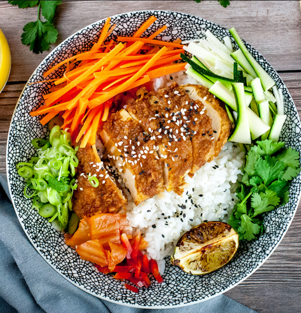
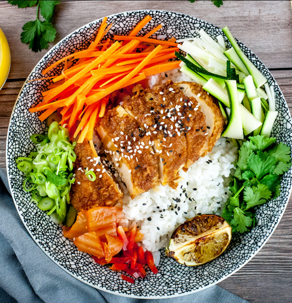

Tokio, la dinámica metrópolis de Japón, ofrece una fascinante fusión entre la modernidad y la rica herencia cultural del país. Su cultura culinaria es una obra maestra de sabores refinados y presentaciones estéticas. La cocina japonesa en Tokio abarca desde deliciosos platos tradicionales como el sushi, sashimi y ramen, hasta innovaciones culinarias en la escena de restaurantes de alta cocina. Los ingredientes destacados incluyen pescado fresco, arroz, algas, fideos soba, wasabi y una variedad de vegetales frescos. Las tradiciones culinarias en Tokio incluyen la ceremonia del té, donde se aprecia la estética y la preparación meticulosa de esta bebida. Los izakayas, pequeños bares y restaurantes informales, son lugares donde los tokiotas disfrutan de bebidas y platillos variados en un ambiente relajado. Además, la cultura del kaiseki, una experiencia culinaria multisensorial, representa la excelencia en la presentación de platos. En resumen, la escena gastronómica de Tokio es un viaje culinario que combina lo tradicional con lo innovador, ofreciendo una experiencia inolvidable para los amantes de la comida. Video Youtube
 
